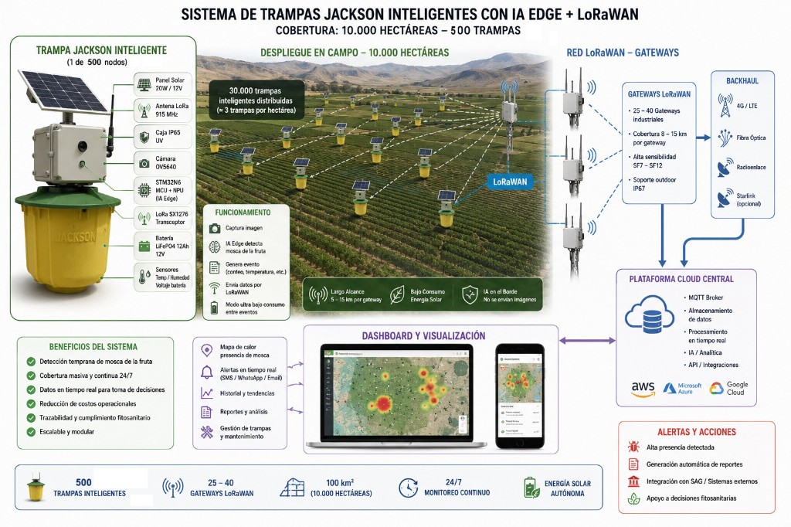

Amenaza fitosanitaria
- Riesgo crítico para la sanidad agrícola chilena y cadena exportadora
- Riesgo de restricciones comerciales internacionales
- Costos muy altos en campañas de erradicación reactivas

Programa de Monitoreo Inteligente de Mosca de la Fruta
Región de Atacama

Zona agrícola estratégica para exportación y producción intensiva del norte — condiciones muy favorables para despliegue IoT/LPWAN tipo LoRaWAN.
Condiciones recomendadas para LoRaWAN: valles extensos, baja densidad urbana, buena línea de vista territorial.


Infraestructura regional escalable para detección y conteo automático, con comunicación eficiente hacia una plataforma central.


«Infraestructura regional inteligente de vigilancia fitosanitaria basada en IA Edge + LoRaWAN: monitoreo continuo, alertas tempranas, cobertura masiva, gestión guiada por datos y mayor resiliencia agrícola.»

Diagrama técnico de referencia: nodo en campo, red LoRaWAN, plataforma cloud y visualización regional.
